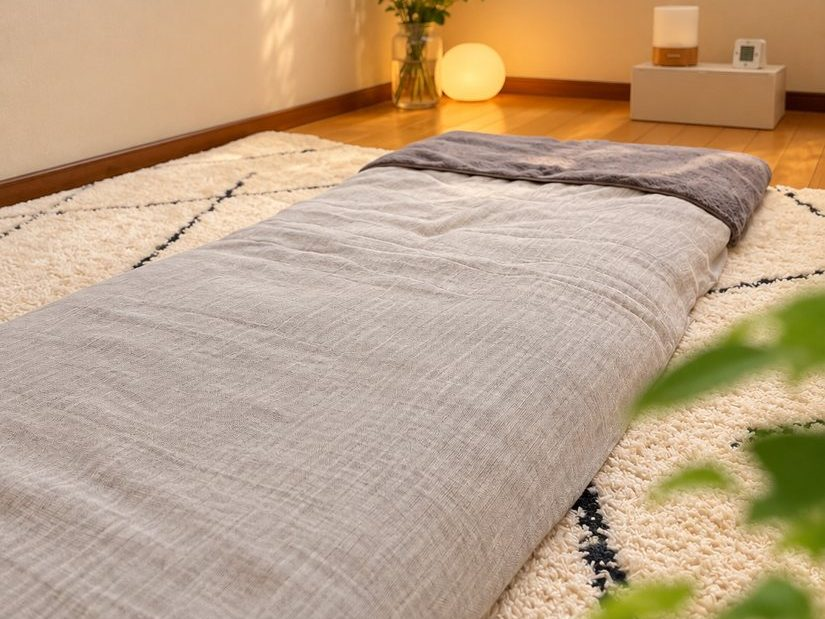
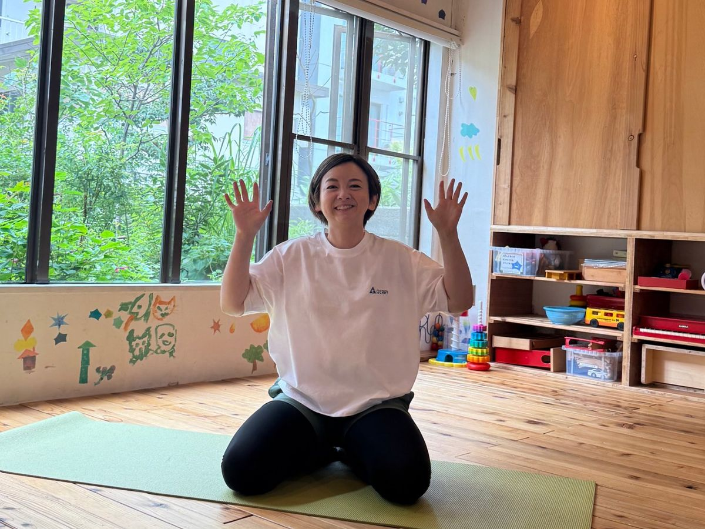

ご都合に合わせて出張の個別ケア
PERSONAL CONDITIONING SESSIONご希望の日時や場所、ご相談内容を伺い、一人ひとりに合わせて行う基本のセッションです。ご自宅、職場、レンタルスペース等への出張を中心に対応します。
出張可否・場所の条件・付随費用はご相談時に確認します。
- 料金
- 20,000円税込／1回
- 時間
- 平均60〜90分
そのときのからだの状態に合わせるため、時間は決めていません。 - 場所
- ご自宅・職場・レンタルスペースなど（出張）
野口整体をベースに、そのときのからだの状態を丁寧に見ながら行う、個別のセッションです。決まった手順を一律に当てはめるのではなく、お一人おひとりとの対話も大切にしています。
個別のケアをご希望の方へ。ご都合に合わせた「出張」と、会場と日程があらかじめ決まっている受け方の2つがあります。

ご都合に合わせてご希望の日時や場所、ご相談内容を伺い、一人ひとりに合わせて行う基本のセッションです。ご自宅、職場、レンタルスペース等への出張を中心に対応します。
出張可否・場所の条件・付随費用はご相談時に確認します。
パブリコや中野ひみつきちで、定休日などを利用して個別ケアだけを行う日です。会場と日時をあらかじめ決めて、枠をご用意しています。料金や時間は、会場ごとに異なります。
からだに備わる働きを、ご自身で感じてみたい方へ。はじめての方も参加できます。

みんなで行うパブリコや中野ひみつきちで、活元運動を一緒に行う会です。準備運動や身体についてのお話も交えるので、初めての方も体験していただけます。ご希望の方は、同じ日に個別ケアも受けられます。
活元運動について読む日程が決まっている個別ケアと活元運動の会の予定は、LINE公式・Peatix（活元運動の会のみ）・Instagramでお知らせしています。ご予約は、LINE公式のLINE予約からお願いします。個別のメッセージでも承ります。
からだの状態は、同じ人でも日々変わります。今ある不調だけに目を向けるのではなく、その人に備わる働きがどう発揮されているかを丁寧に見ていきます。
毎月通うことを前提にするのではなく、そのときの必要に合わせて相談できる関係でありたいと考えています。